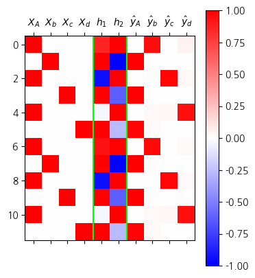
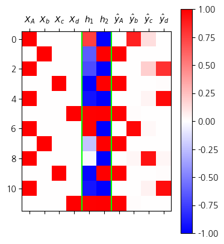
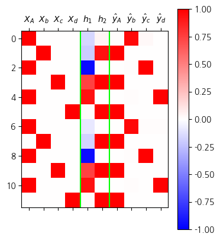

import torch
import pandas as pd
import matplotlib.pyplot as plt1. imports
2. Data - AbAcAd
- 데이터
txt = list('AbAcAd'*50)
txt[:10]['A', 'b', 'A', 'c', 'A', 'd', 'A', 'b', 'A', 'c']df_train = pd.DataFrame({'x':txt[:-1], 'y':txt[1:]})
df_train[:5]| x | y | |
|---|---|---|
| 0 | A | b |
| 1 | b | A |
| 2 | A | c |
| 3 | c | A |
| 4 | A | d |
x = torch.tensor(df_train.x.map({'A':0,'b':1,'c':2,'d':3}))
y = torch.tensor(df_train.y.map({'A':0,'b':1,'c':2,'d':3}))
X = torch.nn.functional.one_hot(x).float()
y = torch.nn.functional.one_hot(y).float()X.shape, y.shape(torch.Size([299, 4]), torch.Size([299, 4]))3. rNNcell
class rNNCell(torch.nn.Module):
def __init__(self):
super().__init__()
self.i2h = torch.nn.Linear(4,2)
self.h2h = torch.nn.Linear(2,2)
self.tanh = torch.nn.Tanh()
def forward(self,Xt,ht):
return self.tanh(self.i2h(Xt)+self.h2h(ht))
torch.manual_seed(43052)
rnncell = rNNCell()
cook = torch.nn.Linear(2,4)
loss_fn = torch.nn.CrossEntropyLoss()
optimizr = torch.optim.Adam(list(rnncell.parameters())+list(cook.parameters()),lr=0.1)
#---#
L = len(X)
for epoc in range(200):
#1~2
loss = 0
ht = torch.zeros(2) # 맹물
for t in range(L):
Xt, yt = X[t],y[t]
ht = rnncell(Xt,ht) #tanh(linr(xt)+linr(ht))
ot = cook(ht)
#yt_hat = soft(ot)
loss = loss + loss_fn(ot, yt)
loss = loss/L
#3
loss.backward()
#4
optimizr.step()
optimizr.zero_grad()- 결과확인 및 시각화
h = torch.zeros(L,2)
water = torch.zeros(2)
h[0] = rnncell(X[0],water)
for t in range(1,L):
h[t] = rnncell(X[t],h[t-1])
h.shapetorch.Size([299, 2])yhat = torch.nn.functional.softmax(cook(h),dim=1)
yhattensor([[4.1978e-03, 9.4555e-01, 1.9557e-06, 5.0253e-02],
[9.9994e-01, 5.5569e-05, 8.4751e-10, 1.3143e-06],
[2.1349e-07, 1.1345e-06, 9.7019e-01, 2.9806e-02],
...,
[2.1339e-07, 1.1339e-06, 9.7020e-01, 2.9798e-02],
[9.9901e-01, 9.6573e-04, 6.9303e-09, 2.1945e-05],
[7.2919e-04, 2.5484e-02, 3.3011e-02, 9.4078e-01]],
grad_fn=<SoftmaxBackward0>)mat = torch.concat([X,h,yhat],axis=1).data
plt.matshow(mat[:12],cmap="bwr",vmin=-1, vmax=1)
plt.colorbar()
plt.xticks(
range(10),
[r"$X_A$", r"$X_b$",r"$X_c$",r"$X_d$",
r'$h_1$',r'$h_2$',
r'$\hat{y}_A$',r'$\hat{y}_b$',r'$\hat{y}_c$',r'$\hat{y}_d$']
);
plt.axvline(x=3.5,color='lime')
plt.axvline(x=5.5,color='lime')
4. torch.nn.RNNcell
torch.manual_seed(0)
rnncell = torch.nn.RNNCell(4,2)
cook = torch.nn.Linear(2,4)
loss_fn = torch.nn.CrossEntropyLoss()
optimizr = torch.optim.Adam(list(rnncell.parameters())+list(cook.parameters()),lr=0.1)L = len(X)
for epoc in range(200):
## 1~2
ht = torch.zeros(2)
loss = 0
for t in range(L):
Xt, yt = X[t], y[t]
ht = rnncell(Xt, ht)
ot = cook(ht)
loss = loss + loss_fn(ot, yt)
loss = loss/L
## 3
loss.backward()
## 4
optimizr.step()
optimizr.zero_grad()h = torch.zeros(L,2)
water = torch.zeros(2)
h[0] = rnncell(X[0],water)
for t in range(1,L):
h[t] = rnncell(X[t],h[t-1])
yhat = torch.nn.functional.softmax(cook(h),dim=1)
yhattensor([[4.6404e-04, 8.6681e-01, 1.3271e-01, 2.1127e-05],
[9.9893e-01, 7.6733e-07, 4.0587e-04, 6.6831e-04],
[1.8856e-04, 8.8543e-05, 1.9117e-01, 8.0855e-01],
...,
[1.5757e-03, 3.7491e-02, 9.2757e-01, 3.3366e-02],
[9.9012e-01, 1.0751e-07, 5.2768e-04, 9.3539e-03],
[4.0457e-05, 5.4018e-06, 4.8826e-02, 9.5113e-01]],
grad_fn=<SoftmaxBackward0>)mat = torch.concat([X,h,yhat],axis=1).data
plt.matshow(mat[:12],cmap="bwr",vmin=-1, vmax=1)
plt.colorbar()
plt.xticks(
range(10),
[r"$X_A$", r"$X_b$",r"$X_c$",r"$X_d$",
r'$h_1$',r'$h_2$',
r'$\hat{y}_A$',r'$\hat{y}_b$',r'$\hat{y}_c$',r'$\hat{y}_d$']
);
plt.axvline(x=3.5,color='lime')
plt.axvline(x=5.5,color='lime')
- torch.nn.RNNCell의 가중치를 이전에 직접 설계한 rNNCell과 동일하게 설정한 후 학습
- 우리가 직접 만든 클래스
rNNCell이 torch에서 기본 제공하는torch.nn.RNNCell과 동일 기능을 수행한다는 것을 확인하기 위함
torch.manual_seed(43052)
_rnncell = rNNCell()
cook = torch.nn.Linear(2,4)rnncell = torch.nn.RNNCell(4,2)
rnncell.weight_ih.data = _rnncell.i2h.weight.data
rnncell.weight_hh.data = _rnncell.h2h.weight.data
rnncell.bias_ih.data = _rnncell.i2h.bias.data
rnncell.bias_hh.data = _rnncell.h2h.bias.data loss_fn = torch.nn.CrossEntropyLoss()
optimizr = torch.optim.Adam(list(rnncell.parameters())+list(cook.parameters()),lr=0.1)L = len(X)
for epoc in range(200):
## 1~2
ht = torch.zeros(2)
loss = 0
for t in range(L):
Xt, yt = X[t], y[t]
ht = rnncell(Xt, ht)
ot = cook(ht)
loss = loss + loss_fn(ot, yt)
loss = loss/L
## 3
loss.backward()
## 4
optimizr.step()
optimizr.zero_grad()h = torch.zeros(L,2)
water = torch.zeros(2)
h[0] = rnncell(X[0],water)
for t in range(1,L):
h[t] = rnncell(X[t],h[t-1])
yhat = torch.nn.functional.softmax(cook(h),dim=1)
yhattensor([[4.1978e-03, 9.4555e-01, 1.9557e-06, 5.0253e-02],
[9.9994e-01, 5.5569e-05, 8.4751e-10, 1.3143e-06],
[2.1349e-07, 1.1345e-06, 9.7019e-01, 2.9806e-02],
...,
[2.1339e-07, 1.1339e-06, 9.7020e-01, 2.9798e-02],
[9.9901e-01, 9.6573e-04, 6.9303e-09, 2.1945e-05],
[7.2919e-04, 2.5484e-02, 3.3011e-02, 9.4078e-01]],
grad_fn=<SoftmaxBackward0>)mat = torch.concat([X,h,yhat],axis=1).data
plt.matshow(mat[:12],cmap="bwr",vmin=-1, vmax=1)
plt.colorbar()
plt.xticks(
range(10),
[r"$X_A$", r"$X_b$",r"$X_c$",r"$X_d$",
r'$h_1$',r'$h_2$',
r'$\hat{y}_A$',r'$\hat{y}_b$',r'$\hat{y}_c$',r'$\hat{y}_d$']
);
plt.axvline(x=3.5,color='lime')
plt.axvline(x=5.5,color='lime')_files/figure-html/cell-20-output-1.png)
5. torch.nn.RNN
ref: https://docs.pytorch.org/docs/stable/generated/torch.nn.RNN.html
RNNCell, 배치사용 X |
RNNCell, 배치사용 O |
|
|---|---|---|
| X | \((L,H_{in})\) | \((L, N, H_{in})\) |
| h | \((L,H_{out})\) | \((L, N, H_{out})\) |
| y | \((L,Q)\) | \((L, N, Q)\) |
| Xt | \((H_{in},)\) | \((N, H_{in})\) |
| ht | \((H_{out},)\) | \((N, H_{out})\) |
| yt | \((Q,)\) | \((N,Q)\) |
RNN, 배치사용 X |
RNN, 배치사용 O |
|
|---|---|---|
| X | \((L,H_{in})\) | \((L, N, H_{in})\) |
| h | \((L,H_{out})\) | \((L, N, H_{out})\) |
| y | \((L,Q)\) | \((L, N, Q)\) |
| hx | \((D\times {\tt num\_layers},H_{out})\) | \((D\times {\tt num\_layers},N,H_{out})\) |
- torch.nn.RNN을 활용한 학습
torch.manual_seed(0)
rnn = torch.nn.RNN(
input_size= 4, # X.shape=(299,4)
hidden_size = 2, # h.shape=(299,2)
num_layers = 1, # 우리수업에서는 그냥1
bidirectional = False # 우리수업에서는 항상 False
)
cook = torch.nn.Linear(2,4)
loss_fn = torch.nn.CrossEntropyLoss()
optimizr = torch.optim.Adam(list(rnn.parameters())+list(cook.parameters()),lr=0.1)D = 1
n_of_layers = 1
waters = torch.zeros(D*n_of_layers,2)
for epoc in range(200):
## 1
h, hL = rnn(X,waters)
out = cook(h)
## 2
loss = loss_fn(out,y)
## 3
loss.backward()
## 4
optimizr.step()
optimizr.zero_grad()yhat = torch.nn.functional.softmax(out,dim=1)mat = torch.concat([X,h,yhat],axis=1).data
plt.matshow(mat[:12],cmap="bwr",vmin=-1, vmax=1)
plt.colorbar()
plt.xticks(
range(10),
[r"$X_A$", r"$X_b$",r"$X_c$",r"$X_d$",
r'$h_1$',r'$h_2$',
r'$\hat{y}_A$',r'$\hat{y}_b$',r'$\hat{y}_c$',r'$\hat{y}_d$']
);
plt.axvline(x=3.5,color='lime')
plt.axvline(x=5.5,color='lime')- torch.nn.RNN의 가중치를 이전에 직접 설계한 rNNCell과 동일하게 설정한 이후 학습
torch.manual_seed(43052)
_rnncell = rNNCell()
cook = torch.nn.Linear(2,4)
rnn = torch.nn.RNN(
input_size= 4, # X.shape=(299,4)
hidden_size = 2, # h.shape=(299,2)
num_layers = 1, # 우리수업에서는 그냥1
bidirectional = False # 우리수업에서는 항상 False
)
rnn.weight_hh_l0.data = _rnncell.h2h.weight.data
rnn.weight_ih_l0.data = _rnncell.i2h.weight.data
rnn.bias_hh_l0.data = _rnncell.h2h.bias.data
rnn.bias_ih_l0.data = _rnncell.i2h.bias.data
loss_fn = torch.nn.CrossEntropyLoss()
optimizr = torch.optim.Adam(list(rnn.parameters())+list(cook.parameters()),lr=0.1)D = 1
n_of_layers = 1
waters = torch.zeros(D*n_of_layers,2)
for epoc in range(200):
## 1
h, hL = rnn(X,waters)
out = cook(h)
## 2
loss = loss_fn(out,y)
## 3
loss.backward()
## 4
optimizr.step()
optimizr.zero_grad()yhat = torch.nn.functional.softmax(out,dim=1)
yhattensor([[4.1735e-03, 9.4560e-01, 2.0230e-06, 5.0224e-02],
[9.9994e-01, 5.7244e-05, 8.9595e-10, 1.3591e-06],
[2.2307e-07, 1.2191e-06, 9.6979e-01, 3.0213e-02],
...,
[2.2298e-07, 1.2186e-06, 9.6979e-01, 3.0207e-02],
[9.9892e-01, 1.0570e-03, 7.6837e-09, 2.4104e-05],
[9.3831e-04, 3.6736e-02, 2.3406e-02, 9.3892e-01]],
grad_fn=<SoftmaxBackward0>)mat = torch.concat([X,h,yhat],axis=1).data
plt.matshow(mat[:12],cmap="bwr",vmin=-1, vmax=1)
plt.colorbar()
plt.xticks(
range(10),
[r"$X_A$", r"$X_b$",r"$X_c$",r"$X_d$",
r'$h_1$',r'$h_2$',
r'$\hat{y}_A$',r'$\hat{y}_b$',r'$\hat{y}_c$',r'$\hat{y}_d$']
);
plt.axvline(x=3.5,color='lime')
plt.axvline(x=5.5,color='lime')6. torch.nn.LSTM
torch.manual_seed(1)
lstm = torch.nn.LSTM(
input_size= 4, # X.shape=(299,4)
hidden_size = 2, # h.shape=(299,2)
num_layers = 1, # 우리수업에서는 그냥1
bidirectional = False # 우리수업에서는 항상 False
)
cook = torch.nn.Linear(2,4)
loss_fn = torch.nn.CrossEntropyLoss()
optimizr = torch.optim.Adam(list(lstm.parameters())+list(cook.parameters()),lr=0.1)for epoc in range(200):
## 1
h, _ = lstm(X)
out = cook(h)
## 2
loss = loss_fn(out,y)
## 3
loss.backward()
## 4
optimizr.step()
optimizr.zero_grad()yhat = torch.nn.functional.softmax(out,dim=1)mat = torch.concat([X,h,yhat],axis=1).data
plt.matshow(mat[:12],cmap="bwr",vmin=-1, vmax=1)
plt.colorbar()
plt.xticks(
range(10),
[r"$X_A$", r"$X_b$",r"$X_c$",r"$X_d$",
r'$h_1$',r'$h_2$',
r'$\hat{y}_A$',r'$\hat{y}_b$',r'$\hat{y}_c$',r'$\hat{y}_d$']
);
plt.axvline(x=3.5,color='lime')
plt.axvline(x=5.5,color='lime')
A1. 자잘한 용어 정리 (\(\star\))
A. \({\bf X}\), \({\bf y}\)
- X, y를 지칭하는 이름
| 구분 | 용어 | 설명 |
|---|---|---|
| X | 설명변수 | 종속변수(반응변수)를 설명하거나 예측하는 데 사용되는 변수로, 전통 통계 및 머신러닝에서의 입력 역할 |
| 독립변수 (Independent Variable) | 전통적인 통계학 및 회귀 분석 문맥에서 사용됨 | |
| 입력변수 (Input Variable) | 머신러닝 모델에서 입력 데이터로 사용되며, 특히 신경망 구조 등에서 많이 쓰임 | |
| 특징 / 특성 (Feature) | 머신러닝, 데이터마이닝, 딥러닝 등에서 데이터를 구성하는 속성 또는 설명 변수로 사용됨 | |
| 예측 변수 (Predictor) | 예측 모델 설계 시 독립변수를 지칭하는 용어로, 모델링/통계 분석 문맥에서 흔히 사용됨 | |
| 공변량 (Covariate) | 실험 디자인, 특히 임상연구나 사회과학 연구에서 제어 변수로 사용됨 | |
| y | 반응변수 | 독립변수의 영향을 받는 결과 변수로, 모델링이나 인과 추론에서 핵심적인 대상 |
| 종속변수 (Dependent Variable) | 전통 통계학과 회귀분석에서 사용되며, 독립변수의 영향을 받는 변수로 정의됨 | |
| 출력변수 (Output Variable) | 머신러닝 및 딥러닝에서 모델의 예측 결과로 출력되는 값으로 사용됨 | |
| 타겟 / 정답 (Target / Label) | 지도학습에서 모델이 학습해야 하는 실제 정답값을 의미하며, 분류/회귀 문제에 공통적으로 사용됨 |
B. 지도학습
- 우리가 수업에서 다루는 데이터는 주로 아래와 같은 느낌이다.
데이터는 \((X,y)\)의 형태로 정리되어 있다.
\(y\)는 우리가 관심이 있는 변수이다. 즉 우리는 \(y\)를 적절하게 추정하는 것에 관심이 있다.
\(X\)는 \(y\)를 추정하기 위해 필요한 정보이다.
| \(X\) | \(y\) | 비고 | 순서 | 예시 |
|---|---|---|---|---|
| 기온(온도) | 아이스 아메리카노 판매량 | 회귀 | 상관없음 | 날씨가 판매량에 미치는 영향 분석 |
| 스펙 | 합격 여부 | 로지스틱 | 상관없음 | 입사 지원자의 합격 예측 |
| 이미지 | 카테고리 | 합성곱신경망 (CNN) | 상관없음 | 개/고양이 이미지 구분 |
| 유저, 아이템 정보 | 평점 | 추천시스템 | 상관없음 | 넷플릭스 영화 추천 |
| 처음 \(m\)개의 단어(문장) | 이후 1개의 단어(문장) | 순환신경망 (RNN) | 순서 상관 있음 | 챗봇, 문장 생성, 언어 모델링 |
| 처음 \(m\)개의 단어(문장) | 카테고리 | 순환신경망 (RNN) | 순서 상관 있음 | 영화리뷰 감정 분류 |
- 이러한 문제상황, 즉 \((X,y)\)가 주어졌을때 \(X \to y\)를 추정하는 문제를 supervised learning 이라한다.
C. 모델이란?
- 통계학에서 모델은 y와 x의 관계를 의미하며 오차항의 설계를 포함하는 개념이다. 이는 통계학이 “데이터 = 정보 + 오차”의 관점을 유지하기 때문이다. 따라서 통계학에서 모델링이란
\[y_i = net(x_i) + \epsilon_i\]
에서 (1) 적절한 함수 \(net\)를 선택하는 일 (2) 적절한 오차항 \(\epsilon_i\) 을 설계하는일 모두를 포함한다.
- 딥러닝 혹은 머신러닝에서 모델은 단순히
\[y_i \approx net(x_i)\]
를 의미하는 경우가 많다. 즉 “model=net”라고 생각해도 무방하다. 이 경우 “모델링”이란 단순히 적절한 \(net\)을 설계하는 것만을 의미할 경우가 많다.
- 그래서 생긴일
- 통계학교재 특징: 분류문제와 회귀문제를 엄밀하게 구분하지 않는다. 사실 오차항만 다를뿐이지 크게보면 같은 회귀모형이라는 관점이다. 그래서 일반화선형모형(GLM)이라는 용어를 쓴다.
- 머신러닝/딥러닝교재 특징: 회귀문제와 분류문제를 구분해서 설명한다. (표도 만듦) 이는 오차항에 대한 기술을 모호하게 하여 생기는 현상이다.
D. 학습이란?
- 학습이란 주어진 자료 \((X,y)\)를 잘 분석하여 \(X\)에서 \(y\)로 가는 어떠한 “규칙” 혹은 “원리”를 찾는 것이다.
- 학습이란 주어진 자료 \((X,y)\)를 잘 분석하여 \(X\)에서 \(y\)로 가는 어떠한 “맵핑”을 찾는 것이다.
- 학습이란 주어진 자료 \((X,y)\)를 잘 분석하여 \(X\)에서 \(y\)로 가는 어떠한 “함수”을 찾는 것이다. 즉 \(y\approx f(X)\)가 되도록 만드는 \(f\)를 잘 찾는 것이다. (이 경우 “함수를 추정한다”라고 표현)
- 학습이란 주어진 자료 \((X,y)\)를 잘 분석하여 \(X\)에서 \(y\)로 가는 어떠한 “모델” 혹은 “모형”을 찾는 것이다. 즉 \(y\approx model(X)\)가 되도록 만드는 \(model\)을 잘 찾는 것이다. (이 경우 “모형을 학습시킨다”라고 표현)
- 학습이란 주어진 자료 \((X,y)\)를 잘 분석하여 \(X\)에서 \(y\)로 가는 어떠한 “네트워크”을 찾는 것이다. 즉 \(y\approx net(X)\)가 되도록 만드는 \(net\)을 잘 찾는 것이다. (이 경우 “네트워크를 학습시킨다”라고 표현)
- prediction이란 학습과정에서 찾은 “규칙” 혹은 “원리”를 \(X\)에 적용하여 \(\hat{y}\)을 구하는 과정이다. 학습과정에서 찾은 규칙 혹은 원리는 \(f\),\(model\),\(net\) 으로 생각가능한데 이에 따르면 아래가 성립한다.
- \(\hat{y} = f(X)\)
- \(\hat{y} = model(X)\)
- \(\hat{y} = net(X)\)
E. \(\hat{y}\)를 부르는 다양한 이름
- \(\hat{y}\)는 \(X\)가 주어진 자료에 있는 값인지 아니면 새로운 값 인지에 따라 지칭하는 이름이 미묘하게 다르다.
\(X \in data\): \(\hat{y}=net(X)\) 는 predicted value, fitted value 라고 부른다.
\(X \notin data\): \(\hat{y}=net(X)\) 는 predicted value, predicted value with new data 라고 부른다.
F. 다양한 코드들
- 파이썬 코드..
#Python
predictor.fit(X,y) # autogluon 에서 "학습"을 의미하는 과정
model.fit(X,y) # sklearn 에서 "학습"을 의미하는 과정
trainer.train() # huggingface 에서 "학습"을 의미하는 과정
trainer.predict(dataset) # huggingface 에서 "예측"을 의미하는 과정
model.fit(x, y, batch_size=32, epochs=10) # keras에서 "학습"을 의미하는 과정
model.predict(test_img) # keras에서 "예측"을 의미하는 과정 - R 코드..
# R
ols <- lm(y~x) # 선형회귀분석에서 학습을 의미하는 함수
ols$fitted.values # 선형회귀분석에서 yhat을 출력
predict(ols, newdata=test) # 선형회귀분석에서 test에 대한 예측값을 출력하는 함수
ols$coef # 선형회귀분석에서 weight를 확인하는 방법A2. 신경망관련 용어
- 은근히 용어가 헷갈리는데, 뜻을 좀 살펴보자.
- ANN: 인공신경망
- MLP: 다층퍼셉트론 (레이어가 여러개 있어요)
- DNN: 깊은신경망, 심층신경망
- CNN: 합성곱신경망
- RNN: 순환신경망
# 예시1 – MLP, DNN
net = torch.nn.Sequential(
torch.nn.Linear(in_features=1,out_features=2),
torch.nn.ReLU(),
torch.nn.Linear(in_features=2,out_features=2),
torch.nn.ReLU(),
torch.nn.Linear(in_features=2,out_features=1),
torch.nn.Sigmoid()
)- ANN: O
- MLP: O
- DNN: O
- CNN: X (합성곱레이어가 없으므로)
- RNN: X (순환구조가 없으므로)
#
# 예시2 – MLP, Shallow Network
net = torch.nn.Sequential(
torch.nn.Linear(in_features=1,out_features=2),
torch.nn.ReLU(),
torch.nn.Linear(in_features=2,out_features=1),
torch.nn.Sigmoid()
)- ANN: O
- MLP: O
- DNN: X (깊은 신경망으로 생각하려면 더 많은 레이어가 필요함. 합의된 기준은 히든레이어 2장이상, 이걸 설명하기 위해서 얕은 신경망이란 용어도 씀)
- CNN: X (합성곱레이어가 없으므로)
- RNN: X (순환구조가 없으므로)
#
# 예시3 – MLP, DNN, Wide NN
net = torch.nn.Sequential(
torch.nn.Linear(in_features=1,out_features=1048576),
torch.nn.ReLU(),
torch.nn.Linear(in_features=1048576,out_features=1048576),
torch.nn.ReLU(),
torch.nn.Linear(in_features=1048576,out_features=1),
torch.nn.Sigmoid(),
)- ANN: O
- MLP: O
- DNN: O (깊긴한데 이정도면 모양이 깊다기 보다는 넓은 신경망임, 그래서 어떤 연구에서는 이걸 넓은 신경망이라 부르기도 함)
- CNN: X (합성곱레이어가 없으므로)
- RNN: X (순환구조가 없으므로)
# 예시4 – CNN
net = torch.nn.Sequential(
# Layer1
torch.nn.Conv2d(1, 64, kernel_size=4, stride=2, padding=1, bias=False),
torch.nn.LeakyReLU(0.2),
# Layer2
torch.nn.Conv2d(64, 128, kernel_size=4, stride=2, padding=1, bias=False),
torch.nn.BatchNorm2d(128),
torch.nn.LeakyReLU(0.2),
# Layer3
torch.nn.Conv2d(128, 256, kernel_size=4, stride=2, padding=1, bias=False),
torch.nn.BatchNorm2d(256),
torch.nn.LeakyReLU(0.2),
# Layer4
torch.nn.Conv2d(256, 512, kernel_size=4, stride=2, padding=1, bias=False),
torch.nn.BatchNorm2d(512),
torch.nn.LeakyReLU(0.2),
# Layer5
torch.nn.Conv2d(512, 1, kernel_size=4, stride=1, padding=0, bias=False),
torch.nn.Sigmoid(),
torch.nn.Flatten()
)- ANN: O
- MLP: X (합성곱연결이 포함되어있으므로, MLP가 아님, 완전연결만 포함해야 MLP임)
- DNN: O
- CNN: O (합성곱레이어를 포함하고 있으므로)
- RNN: X (순환구조가 없으므로)
#
# 예시5 – CNN
net = torch.nn.Sequential(
torch.nn.Conv2d(1,16,(5,5)),
torch.nn.ReLU(),
torch.nn.MaxPool2d((2,2)),
torch.nn.Flatten(),
torch.nn.Linear(2304,1),
torch.nn.Sigmoid()
)- ANN: O
- MLP: X
- DNN: X? (히든레이어가 1장이므로..)
- CNN: O (합성곱레이어를 포함하고 있으므로)
- RNN: X (순환구조가 없으므로)
근데 대부분의 문서에서는 CNN, RNN은 DNN의 한 종류로 설명하고 있어서요.. 이런 네트워크에서는 개념충돌이 옵니다.
#
# 예시6 – RNN
class Net(torch.nn.Module):
def __init__(self):
super().__init__()
self.rnn = torch.nn.RNN(4,2)
self.linr = torch.nn.Linear(2,2)
def forward(self,X):
h,_ = self.rnn(X)
netout = self.linr(h)
return netout
net = Net() - ANN: O
- MLP: X
- DNN: X? (히든레이어가 1장이므로..)
- CNN: X (합성곱레이어가 없으므로)
- RNN: O
이것도 비슷한 개념충돌
#
A3. 학습
- 모든 인공지능 관련 알고리즘은 아래의 분류로 가능함.
| 특징 | 지도학습 (Supervised Learning) | 비지도학습 (Unsupervised Learning) | 강화학습 (Reinforcement Learning) |
|---|---|---|---|
| 정의 | 입력 데이터와 정답(레이블)을 사용 | 입력 데이터만 사용 | 에이전트가 환경과 상호작용하며 학습 |
| 목표 | 입력에 대한 정확한 출력을 예측 | 데이터의 숨겨진 구조나 패턴 발견 | 최대 보상을 얻기 위한 최적의 정책 학습 |
| 예시 | 이미지 분류, 스팸 필터링 | 군집화, 차원 축소 | 게임 플레이, 로봇 제어 |
| 주요 알고리즘 | 선형 회귀, 로지스틱 회귀, SVM | K-평균, PCA, 오토인코더 | Q-러닝, DQN |
| 활용 | 분류, 예측 | 데이터의 숨겨진 패턴 발견 | 복잡한 의사결정 문제 해결 가능 |
| 데이터 요구사항 | 레이블링이 반드시 필요 | 많은 양의 데이터 필요 | 시뮬레이션 또는 실제 환경 필요 |
- 그런데 분류가 애매한 것들이 점점 많아짐.